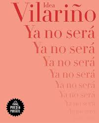
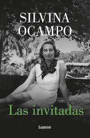
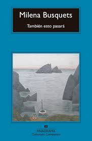
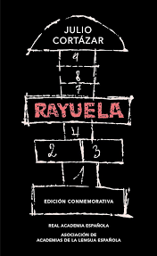
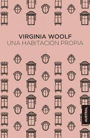
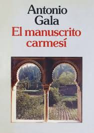
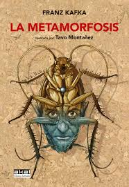
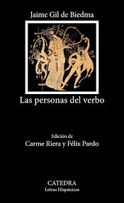
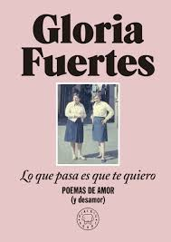
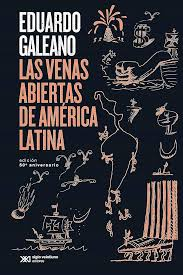

Un espacio para descubrirte a través de las palabras.
Descubre a estos autores cuya obra ha marcado la historia de la filosofía, la escritura y la poesía.
Libro destacado: Diarios
| Fragmento |
|---|
| "He deseado ser sólo una, hablar con palabras justas y serena, vivir dentro de una verdad pequeña. Pero jamás podría ser una." |
Libro destacado: Ya no
| Fragmento |
|---|
| "Ya no será, ya no, no viviremos juntos, no criaré a tu hijo, no coseré tu ropa, no te tendré de noche, no te besaré al irme, nunca sabrás quién fui, por qué me amaron otros." |
Libro destacado: Las invitadas
| Fragmento |
|---|
| "La vida tiene alas y el sueño pies. La vida no sabe andar y el sueño vuela en todas direcciones." |
Libro destacado: También esto pasará
| Fragmento |
|---|
| "La muerte de una madre te desordena para siempre, pero también te libera." |
Libro destacado: Rayuela
| Fragmento |
|---|
| "Andábamos sin buscarnos, pero sabiendo que andábamos para encontrarnos." |
Libro destacado: Una habitación propia
| Fragmento |
|---|
| "Una mujer debe tener dinero y una habitación propia si va a escribir ficción." |
Libro destacado: El manuscrito carmesí
| Fragmento |
|---|
| "La vida es un sueño del que despertamos muriendo." |
Libro destacado: La metamorfosis
| Fragmento |
|---|
| "Al despertar Gregorio Samsa una mañana, tras un sueño intranquilo, se encontró en su cama convertido en un monstruoso insecto." |
Libro destacado: El Capital
| Fragmento |
|---|
| "La historia de todas las sociedades hasta nuestros días es la historia de la lucha de clases." |
Libro destacado: Las personas del verbo
| Fragmento |
|---|
| "Que la vida iba en serio uno lo empieza a comprender más tarde." |
Libro destacado: Lo que pasa es que te quiero
| Fragmento |
|---|
| "Voy por las calles tan contenta y no llevo encima nada más que tu nombre." |
Libro destacado: Las venas abiertas de América Latina
| Fragmento |
|---|
| "La sangre de los trabajadores no fue la única que se derramó. La sangre de los pueblos originarios y de los esclavos africanos, la sangre de los campesinos, de los obreros y de los soldados, fue derramada para que otros pudieran llevarse el botín." |